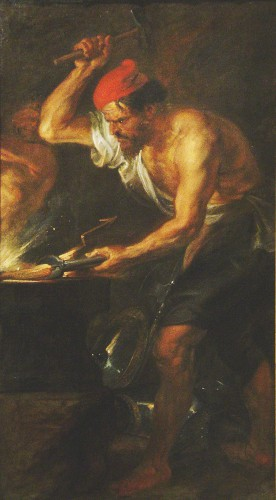

Aşk ve güzellik tanrıçası Afrodit, Heseidos kaynakları ve Homeros kaynaklarında farklı ana-babanın çocuğu olarak gösterilmektedir. Heseiodos kaynakların göre0 Afrodit, deniz dalgalarının köpüğünden doğmuştur. Nitekim Aphros sözcüğü de Yunanca “köpük” anlamına gelmektedir. Mitoza göre Uranos, Gaia’dan olan bütün çocuklarını doğar doğmaz toprağın derinliklerine gömdüğünden, yer oldukça şişmiş ve korkunç sancılar içinde kıvranmaya, debelenmeye başlamıştır. Uronos’un çocuklarını yer altına gömmesine çok öfkelenen ve onun tanrısal saltanatına isyan eden Kronos, annesi Gaia’nın kendisine sağladığı bir tırpanla babası Uronos’un hayalarını keserek denize fırlatmış, işte aşk ve güzellik tanrıçası Afrodit de Uronos’un hayalarındaki dölün denizle birleşmesinden meydana gelmiştir.
Mitoza göre Afrodit’nin doğumu şöyle olmuştur; yemyeşil güzelliği, aydınlık semasıyla doğanın canlanışına tanıklık eden bir bahar günü bembeyaz ve duru denizde birden köpüklü dalgalar meydana geldi. Akdeniz’in bu dalgaları Kıbrıs adası sahillerinde kumsalları, kayalıkları dövmeye, dehşete köpürmeye başladı. Denizin sahile bıraktığı yosunlardan bir müddet sonra güzel bir yatak oluştu. Köpüklü dalgalar bu döşeğin üzerine çırılçıplak, olağanüstü güzellikle bir kız bıraktılar. Dalgaların köpüğünden peydah olan bu güzellikte sınır tanımaz tanrıça, Afrodit’den başkası değildi.
Heseidos’un Thegonia adlı eserinde ise Kronos’un, babasının hayalarını denize fırlatması ve Afrodit’nin doğumu şöyle anlatılmaktadır:
Dalgalı denize atar atmaz onları
Gittiler engine doğru uzun zaman
Ak köpükler çıkıyordu tanrısal uzuvdan:
Bir kız türeyiverdi. Bu ak köpükten,
Önce kutsal Kythrea’ya uğradı bu kız,
Oradan da denizle çevrili Kıbrıs’a gitti.
Orada karaya çıktı güzeller güzeli tanrıça,
Yürüdükçe yeşil çimenler fışkırıyordu
Narin ayaklarının bastığı yerden
Afrodit dediler ona tanrılar ve insanlar,
Bir köpükten doğmuş olduğu için.
Homeros’a göre Afrodit, tanrıların tanrısı Zeus ile Okeanos ırmağının kızı Dione’nin çocuğudur. Nitekim Homeros’un İlyada destanında Afrodit, Diomenes’le çarpışıp yaralandığında, annesi Dione onu kucaklayarak sevgi ve şefkat gösterir, savaş işlerinin ona göre olmadığını, bu gibi kanlı ve acımasız işlerle Ares ile Athena’nın uğraşmasını söyleyerek Afrodit’nin kolundan akan kanı siler ve yaralarını iyileştirir.
Heseidos kaynaklarına göre Afrodit doğduğunda Afrodit’nin oğlu Eros, aşkın ayrılmaz eşi olan Kahkaha’lar, Arzu tanrıçaları Hymenaioslar da onunla birliktedir. Görüldüğü üzer Afrodit dünyaya gelirken aşkın bütün unsurları (arzu, seks ve neşe) ile birlikte dünyaya gelmiştir.
Afrodit Kıbrıs sahillerine çıktıktan sonra onu zaman tanrıçaları Hora’lar karşıladılar. Horalar ilk olarak bu kıyıya vurmuş tanrıçanın vücudundaki deniz suyu tuzunu temizleyerek tüm bedeninin kuruladılar. Sonra onun kumral güzel saçlarını örerek, en güzel elbiselerle giydirdiler. Başına altından bir taç yerleştirip kulaklarını, boğazını, göğsünü envai çeşit takı ve ziynet eşyaları ile süslediler. Aşk ve güzellik tanrıçası böylelik evrenin en güzel kadını haline geldi. Sonra iki güvercinin çektiği bir tanrılar arabası (şar) geldi ve Afrodit’yi ölümsüz tanrıların ülkesine, Olimpos Dağı’na götürdü.
Afrodit, Olimpos Dağı’na geldiği sırada Olimpos’un yüce tanrıları toplandı halinde bulunuyorlardı. Güvercinlerin çektiği şar, Olimpos semalarında görünüp Afrodit kendi güzel suretini tanrı ve tanrıçalara gösterdiğinde, bu güzellik karşısında büyülenen tanrılar hemen ayağa kalkarak onun kutsadılar ve tanrıça olarak aralarına alarak yüksek bir tahta oturttular. Böylelikle Afrodit, Olimpos tanrıları arasındaki eşsiz yerini almış oldu.
Afrodit’in temsili resimlerinden biri.
Afrodit’in Karakter Özellikleri
Aşk ve güzellik tanrısı Afrodit, güzelliği ile herkesi kendine hayran bırakan, daima gülümseyen, işveli ve gönülleri fetheden bir tanrıça idi. Afrodit ak köpükten doğduğu için büyülü bir memeliğe sahipti. Bu memelik, en sevgisiz kalpleri bile aşık edecek bir tılsıma sahipti. Bu yüzden Hera, sık sık bu memeliği Afrodit’den almak için çabalar. Sevginin ve sevişmenin sembolü olan bu memelik, başka tanrılar aracılığıyla sihrini gösterir ve etrafındakilerde aşk ve sevgi duygusunu uyandırır. Bu tanrı ve tanrıçalar; Eros, güzelliğin ve zarafetin sembolü Kharit’ler, zaman tanrıçaları Horalar ve arzu tanrıçaları Hymenaios’lardır. Afrodit, memeliğinde sakladığı aşk büyüsünü bu tanrılar vasıtası ile harekete geçirir.
Hesaidos Thegonia adlı eserinde Afrodit’nin bu tanrısal grubunu ve Afrodit’nin tanrısal görevini şöyle tanımlar:
Doğup da yürüyünce tanrılara doğru
Eros’la Himeros takıldılar hemen peşine.
İlk günde bu oldu onun tanrılık payı
İnsanlar arasında da ölümsüzler arasında da;
Ona düştü kız cilveleri, gülüşmeleri, oynaşmaları,
Sevmenin sevilmenin tadı, büyüsü.
Afrodit güvercin, serçe, gül ve mersin ağacını ile simgelenmiştir. Şairleri en çok esinlendiren şiirlere şarkılara konu olan duygular ondan gelir. Afrodit yeryüzünde hayatın, bereketin üremenin ve yaratmanın timsalidir. Olağanüstü güzelliği ve karşı konulmaz çekiciliği ile bütün ölümlülerin gönüllerine hükmederdi. Ölümlü insanların gönüllerinde sonsuz mutluluk, neşe ve sevinç yaratabildiği gibi acı, üzüntü ve ıstırap da yaratabilirdi. Eğer seven kişi Afrodit’in yardımına mazhar olup aşkına karşılık bulursa dünyanın en mutlu insanı haline gelirdi. Ama Afrodit’in inayetini göremezse bu kez en bedbaht ve yaşama küskün biri olup çıkardı. Afrodit sadece canlılara değil, temsil ettiği aşk gücü ile doğaya da hükmedebiliyordu. Onun işveli ve sevgi dolu bakışları, azgın dalgaları birden sakinleştirebilir, en sert rüzgarları dindirebilirdi. Yeryüzünde cana gelen her şey onun aşkı ile canlanır ve vücut bulurdu. O tıpkı tanrısal bir ışık gibi hayatı müjdelerdi. Nitekim Afrodit güzellik tanrıçası olmazdan önce ışık tanrıçasıdır. Onun ışığından ve aşkından doğar bütün hayat ve güzellik... Güzellik ise aşkı yeniden besleyerek çoğaltır. O gönüllere sevgi ve arzuyu ekerken, yaşamın çoğalmasına ve üremesine hizmet etmektedir aslında. Aşk bütün ölümlülerde ve ölümsüzlerde iyicil duyguları ayağa kaldırır. Dünyaya ve evrene sevgi ile bakmalıdır tüm yaradılışlılar. Bu nedenle Afrodit, sürekli gülümseyen ve etrafına güzel duygular saçan bir bir tanrıçadır.
Ne var ki, Afrodit’nin bu iyiliği ve etrafa saçtığı gülücükler, kimi zaman aldatıcı da olabilir. Tıpkı aşk gibi... Zira aşkın hiçbir zaman tek bir yüzü -iyi yüz- yoktur. O aynı zamanda, hayatları kahreden, insanları felaketlere sürükleyen, en derin ve bitmek bilmez acıların kaynağıdır. O aşk ki, kanlı katliamlarla biten savaşlara yol açar; kendisini onun büyüsüne kaptırmış olanlara annesini bile unutturur; intikam, hırs, tuzak, çılgınlık ve delilik hep aşktan doğar. Aşkın birleşmesi ne kadar güzelse, ayrılığı da o kadar acı vericidir. Aşkın bu iki yüzü, Afrodit’nin kişiliğindeki çelişkilerin de dışa vurumu gibidir. O güzelliğin ve aşkın tanrıçası, aynı zamanda Phobos (bozgun) ve Deimos’un (korku) anasıdır. İntikamı ve hırsı çok keskindir Afrodit’nin. Aşk onun elinde bir sevgi aracı olabileceği gibi intikam aracına da dönüşebilir. Hoşlanmadığı ya da cezalandırmak istediği tanrıçalara ve ölümlülere başa bela açan aşklar gönderir. Örneğin Lemnos kadınlarının kendisine yeterince saygı göstermediğini düşündüğünde, onlara o kadar kötü bir koku verir ki, kocaları bu kadınlarla asla birlikte olmak istemezler. Kinyras’ın kızlarını fahişe haline getirerek gözden düşürür. Afrodit’nin bu ikili karakter özelliği aşkın hem vazgeçilmez hem de insanı felaketlere sürükleyen olumsuz etkilerini simgeler.
Afrodit’in Unvanları
Güzellik ve aşk tanrıçası Afrodit’e, kişiliği ve güzelliği ile çelişen, ‘Fata’ların en yaşlısı’, Erinysler’in kız kardeşi, Melainis, Skotaie, Androphonos, Epitlymbra, Myrtilos gibi birçok unvan da verilmiştir. Bu unvanların her birinin ayrı bir hikayesi ve yakıştırması vardır.
Afrodit Atina’da ‘Fata’ların en yaşlısı’ denmesinin nedeni, Afrodit’nin eski çağlarda yaz gün dönümlerinde kralın kurban olarak sunulduğu tanrıça olmasıdır. İnsan hayatına zaman biçen Zeus’un kararlarını uygulayan Fata’lar sürekli örekede yün eğirirler. Klotho, Lakhesis ve Atropos olarak bilinen bu üç fata’dan en büyüğü Atina’da ‘Afrodit’ Urania ismiyle anılmıştır.
Afrodit verilen olumsuz unvanlardan biri de ‘Erinysler’in kız kardeşi’dir. Erinysler, Gaia’nın Kronos’un hayalarını kesmesiyle toprağa saçılan kanlardan doğan intikam tanrıçalarıdır. Bu intikam tanrıçaları Alekto, Tisiphone ve Megaria’dır. Erinysler, suç işleyenlerin ve özellikle adam öldürenlerin peşine takılan dişi köpekler olarak tasavvur edilir. Bu dişi köpekler peşine düştükleri suçluları sonsuza dek kovalayarak çıldırmalarına yol açarlar. Yunanlılarda bu intikam tanrıçalarını sakinleştirip, gönüllerini hoş tutmak için onlara Eumenides (İyi niyetliler) ismi takılmıştır. Bazı Yunan efsanelerinde ise Erinysler af tanrıçaları halini alırlar. Afrodit tüm güzelliği ve iyi enerjisine rağmen intikamcı ve acımasız bir tanrıçadır. Bu nedenle intikamcılığı ve kindarlığı Erinyslere benzetilerek onların kız kardeşi olarak adlandırılmıştır.
M.S. 2. yüzyılın sonlarında yaşamış olan ünlü Yunan gezgin ve coğrafyacı Pausanias, kadın ve erkeğin birleşmesi genellikle gece olduğundan, gecenin karanlığını bir metafor haline dönüştürüp aşk tanrıçası Afrodit’ye ‘karalık’ anlamına gelen ‘Melainis’ ismini takmıştır. Başka bir yerde de tıpkı Melainis (karalık) sözcüğüyle aynı çağrışım anlamında kullanılmak üzere Afrodit’ye karanlık anlamına gelen Skotia ismi verilmiştir.
Afrodit’nin başka bir unvanı da insan katili anlamına gelen Androphonos’tur. M.S. 46 yılında Yunanistan’ın Beotia bölgesinin Chaeronea şehrinde dünyaya gelen ünlü Yunan düşünürü ve denemecisi Plutarkhos da benzer bir anlamı çağrıştırmak üzere Afrodit’yi, Epitymbria (mezarlara ait) ismiyle anlamaktadır. Güzellik ve aşk tanrıçası Afrodit’nin ölümü içeren bu sözcüklerle anlaşılması, aşkın ölümcül doğasıyla mı ilgili olduğu ya da Afrodit’nin intikam aldığı kişileri çıldırmaya sevk ederek bir nevi ölümü yaşattığı için mi bu sözcüklerle anıldığı net değildir.
Afrodit aynı zamanda denizin cinsel gücü anlamında Myrtilos ile de ilişkilendirilir. Myrtilos, Yunan mitolojisinde Hippodameia mitozunun kahramanlarındandır. Mitoza göre, savaş tanrısı Ares’in oğlu Elis Kralı Oinomaos, güzel kızı Hippomedia’yla evlenmek isteyen taliplerini, araba yarışı yaparak denemek ister. Oinomaos her yarıştan önce Zeus tapınağına bir kurban adamayı alışkanlık haline getirmişti. Bu sırada kızıyla evlenmek isteyen rakipleri bir hayli yol alsalar da Elis kralının atları ölümsüz olduğun anında onlara yetişiyor ve yarışı kazanıyordu. Anlaşma gereği yarışı kaybeden taliplerin kafası kesilerek sarayın kapısına asılıyordu. Bu nedenle sarayın kapısında çok sayıda kesilmiş insan kafası kuru bir halde asılı duruyordu.
Bu zalim kralın acımasız yöntemleri yüzünden, kızı Hippodamedia kimse ile evlenemez olmuştu. Gel zaman git zaman, tanrı Zeus’un torunu Tantaros oğlu Pelops, güzel Hippodamedia’ya talip oldu. Onu göre prenses Pelops’a aşık oldu. Fakat Pelops da tıpkı diğer talipler gibi ölümsüz atlara sahip olan Oinomaos’a yenilmeye mahkumdu. Bunu engellemek için iki aşık kafa kafaya vererek çareler düşünmeye başladılar. Nihayet, kralın arabacısı Myrtilos’u baştan çıkartarak, Oinomos’un arabasının civatalarını gevşetmeye ikna ettiler. Bu hizmetin karşılığı olarak Myrtilos, uzun zamandır şehvetle arzuladığı Hipodamedia’yla bir gece yatmayı şart koşmuş, Pelops da bu şartı kabul etmişti. Yarış başladıktan bir süre sonra kralın arabasının tekerlekleri yerinden oynadı. Sersemleyerek yerinden düşen kral Oinomaos, dizginlere dolaşarak can verdi. Böylece Pelops da güzel sevgilisine kavuşmuş oldu. Ne var ki Pelops, yarıştan sonra Myrtilos’a verdiği sözü tutmayarak Hippodamedia’yla yatmasına razı olmadı ve Myrtilos’u öldürerek denize attı. Myrtilos ölürken, Pelops’un soyuna lanet okudu. Bundan sonra Pelops soyunun başı belalardan kurtulamaz oldu. Böylece muradına eremeden denize giden Mytilos, denizin cinsel gücü olarak nitelenip aşk tanrıçası Afrodit’nin unvanlarından biri olarak anılmaya başlandı.
Afrodit’in Oğlu Eros
Mitoloji tarihinde, üremenin tanrısı olarak kabul edilen Eros’un (Amour) iki türlü yaradılış mitozu yer alır.
Aristotales, Heseiodos, Meleagros ve Pausanias’ göre Eros evrenin yaradılışında rol oynayan evrensel yumurtadan doğan ilk tanrıdır. Bu anlatıya göre cinselliğin ve üremenin tanrısı Eros olmadan tanrılar bile var olamazdı. Bu yüzden o, Gaia (Yer) ile yeraltı ülkesi Tartaros ile birlikte var olmuştur ve evrende yaradılışın temel prensibidir. Bu anlatıya göre Eros, anasız ve babasız doğmuştur ve onu doğurtan ebe tanrıça Eilethyia’dır.
Cicero, Vergilius ve Plutarkhos’un mitolojik anlatısına göre ise Eros güzellik ve Aşk tanrıçası Afrodit’nin oğludur. Zira Afrodit’nin aşk tanrıçası olması ile Eros’un cinsellik ve üremeyi sembolize etmesi işlevsel bakımdan Eros ile Afrodit’nin birlikte anılmasına yol açmıştır. Afrodit ile Eros’un kahramanı olduğu mitozlar da bu ilişkiyi pekiştirici bir nitelik taşımaktadır. Bu anlatıya göre Eros, oldukça güzel ve kanatlı bir çocuktur. Afrodit’nin, Zeus’tan hamile kalması sonucu dünyaya gelmiş ve sınırsız cinsel tutkuların ve üremenin tanrısı olmuştur. Ancak Eros, Olimpos tanrıları içinde hiçbir zaman önemli ve ana tanrılardan biri olmamıştır. Bu haliyle Eros’un Olimpos tanrıları içindeki konumu ve statüsü belirsizdir. Ancak Afrodit ile olan kan bağı nedeniyle somutluk kazanır.
Eros da tıpkı annesi Afrodit gibi güzel, zevk veren ve iyicil duygulara sahiptir. Daima gülümser ve ilkbaharın kokulu nefesi olan Zaphyros ile birlikte sürekli dolaşır. Nitekim baharın cinsellik ve neşe ile birlikte anılması Eros’un bu haliyle uyum içindedir.
Eros ve Afrodit, tanrıların ve ölümlülerin kalbinde ilahi ateşi (Aşk) tutuşturan tanrılardır. Bu aşk ateşi bazı insanlara mutluluk getirdiği gibi bazılarını da bitmek bilmeyen acılar içinde eritip muma çevirirdi. Evrende aşk duygusu o kadar güçlüdür ki, kralları sıradan bir yoksul kızın kölesi haline getirir, doğadaki tüm canlılar onun temel prensibine boyun eğmek zorunda kalır. Eros elinde daima ok ya da kızgın bir meşale tutardı. Annesi Afrodit ile birlikte bu okları kimi zaman bir tanrının kimi zaman da bir ölümlünün gönlüne saplar ya da elindeki meşale ile aşkı tatmamış kalplerin içine ateş düşürürdü. Fakat bu ok ve ateş, her zaman mutluluğa neden olmaz. Bazen de ocaklar yıkar, intikamlara, ölümlere, sonu gelmez acılara yol açar.
Bu bakımdan Afrodit ile oğlu Eros’un evrensel prensipteki yeri iç içe geçmiştir. Ancak mitoloji tarihinde Eros daima Afrodit’nin gölgesi gibi kalmış, tanrılar arasında Afrodit oğluna itibar kazandıramamıştır. Çoğu kez Eros, yakışıklılığı ve gönül alıcılığı ile Afrodit’nin intikam hırslarının yol açtığı felaketlerde bir ceza unsuru olarak yer tutmaktadır.
Afrodit’in Hephaistos’la Evliliği
Afrodit öylesine güzel bir tanrıça idi ki, güzelliği ile Zeus da dahil tüm tanrıların gönlünü fethetmişti. Ne var ki, tanrıların da elini kolunu bağlayan kaderin bir cilvesi olarak, Aprodite tanrıların en çirkini olan ateş ve demir tanrısı topal Hephaistos’un karısı oldu. Afrodit ile Hephaistos’un evliliği bir aşk sonucu değil, Hera ile Hephaistos arasındaki mücadelenin neticesi olarak ortaya çıktı. Tanrıçaların en güzeli ile tanrıların en çirkini arasındaki bu evlilik gerçekte doğadaki zıtlıkların birliğini, çelişkisini ve çatışmasını karakterize etmekte idi.
Zeus ve Hera’nın oğlu olan ateş tanrısı topal Hephaistos, çirkinliği ile nam salmıştı. Güzelliğe aşık annesi Hera ise çirkinliği yüzünden ondan hep nefret etmiş, kendisine yakışmayan bu oğlundan kurtulmak için türlü çareler düşünmüştü. Nihayet bu çirkin oğlundan dolayı diğer tanrıların kendisiyle alay etmesine artık tahammül edemeyen Hera, onu Olimpos dağından aşağı fırlatarak tanrılar dağından kovdu. Tam bir gün sonra Lemnos adasına düşen Hephaistos burada demir, bronz ve değerli madenler üzerine zengin bir bilgi hazinesine sahip olan bir bilginle karşılaştı. Onu himayesine alan bilgin, bir yanardağın içine demir atölyesi kurarak madenlerin tüm sırlarını ve inceliklerini Hephaistos’a öğretti. Dokuz yıl boyunca bu atölyede madenler üzerine çalışan Hephaistos, bu süre zarfında maden işlemeciliğinin bütün inceliklerini ve maharetlerini öğrenerek eşi bulunmaz yüzükler, bilezikler, dayanıklılıkta hiçbir kalkanın boy ölçüşemeyeceği kalkanlar imal etti.
Eşine rastlanmaz bir maden ustası olarak yetişen Hephaistos, aradan uzun yıllar geçmesine rağmen annesi Hera’nın kendisine yaptığı kötülüğü bir an bile aklından çıkartmamış, yıllar geçtikçe ona olan öfkesi katmerlenerek büyümüştü.
Nihayet artık annesi Hera’dan intikamını alacağı o büyük günün geldiğini düşünerek hareket geçti ve ona altından harika bir taht yaparak, Olimpos’a gönderdi. Hiçbir gözün göremediği kıskaçlara sahip olan bu taht, üstüne oturan kişiyi görünmez kıskaçları yardımıyla hemen esir alıyor ve bir daha da kalkmasına asla izin vermiyordu.
Hera bu muhteşem tahtı görür görmez, güzelliği karşısında adeta büyülendi ve derhal bu tahtın üzerine oturmak istedi. Hera’nın tahta oturması ile harekete geçen görünmez kırbaçlar, hemen onu rehin aldılar. Ancak tahtta oturduğu süre içinde Hera’nın hiçbir şeyden haberi olmadı. Ne var ki az sonra kalkmak istediğinde vücudunu tahttan ayıramadığını fark etti. Ne kadar çırpınıp çabalasa da tahttın görünmez kıskaçları Hera’yı bırakmadılar. Onun yardımına gelen diğer tanrılar ise bütün uğraşlarına rağmen görünmez kıskançların kuvvetini kırarak Hera’yı tahttan ayıramadılar.
Karısının taht tarafından rehin alınmasına üzülen ve bu durum karşısında çaresiz kalan Zeus, tanrıların habercisi Hermes’i, Hephaistos’a göndererek Olimpos’a gelmesini istedi. Zira bu kıskaçları kırsa kırsa, kıskaçların mucidi olan Hephaistos kırabilirdi ancak.
Hermes ne yapıp etti ise Hephaistos’u Olimpos’a çıkarmayla ikna edemedi. Hephaistos, Hermes’in söylediklerini adeta duymazlıktan geldi. Bunun üzerine savaş tanrısı Ares devreye girerek, Heiphaistos’u zorla Olimpos’a getirmeye çalıştı. Ancak bu kez de Hephaistos Ares’in üzerine yanan paçavralar atarak onu yenmeyi başardı. Bunun üzerine şarap tanrısı Dionysos, Hephaistos’u büyülü içkisiyle sarhoş edip Olimpos’a getirmeyi başardı.
Olimpos dağına gelen Hephaistos, Hera’nın çaresiz bir vaziyette çırpındığını görünce onu sihirli tahttan kurtaracağını ama Zeus’un da ileri süreceği şartı yerine getirmesi için söz vermesi gerektiğini söyledi. Karısını bir an evvel bu tuzak tahttan kurtarmak isteyen Zeus, Hephaistos’un şartını derhal yerine getireceğini bildirerek “Dile benden ne dilersen...” dedi. Bunun üzerine Hephaistos, Hera’yı kurtarma karşılığında tanrıçaların en güzeli Afrodit’yle evlenmek istediğin söyledi. Bütün tanrı ve tanrıçalar, çirkinlikte eşi benzeri olmayan Hephaistos’un bu şartını hayretle karşıladılar. Afrodit gibi güzelin, Hephaistos gibi bir çirkinle evlenmesine Zeus’un da gönlü razı değildi. Ama karısının kurtulması için bu şartı kabul etmesi gerekiyordu ve dahası Hephaistos’a söz vermişti. Zeus çaresiz, Afrodit’yi Hephaistos’a vermeye razı oldu. Hephaistos da altın tahtın görünmez kıskaçlarını keserek Hera’yı esaretten kurtardı.
Böylelikle güzellik ve aşk tanrıçası Afrodit, bir oldubittiye getirilerek kainatın en çirkin tanrısı Hephaistos’la evlenmek zorunda kaldı.

Afrodit’in eşi Hephaistos.
Afrodit ile Hephaistos’un evliliği doğadaki bütün harekete yön veren zıtlıkların birliği ve çarpışmasını simgelemesi açısından önem arz etmektedir. Nitekim evrende de her şey zıttı ile birlikte anlam kazanır. İyilik-kötülük, gece-gündüz, kadın-erkek, güzellik-çirkinlik, acı-neşe, adalet-adaletsizlik, az-çok, eski- yeni, varlık-yolluk, yaşam-ölüm, geçicilik-ebediyet her şey kendi karşıtı ile değer kazanır. Hareket de bu zıtlıkların mücadelesi ve rekabeti ile ortaya çıkan yaşam enerjisidir. Gece olmadan gündüze dönemeyiz. Acı olmadan neşenin varlığı bilinemez. Bir şeyin yokluğunu hissetmeden varlığının değerini anlayamayız. Suyun hal değiştirmesi eskiden yeniye bir geçiştir. Bugüne girerken dünü terk ederiz. Ölüm olmadan yaşamın, geçicilik olmadan sonsuz olanın bilgisine ulaşamayız. Afrodit ile Hephaistos’un birliği de bu zıt kutupların doğada bir bütün olarak varlığını işaret eder. Ne var ki, Afrodit ile Hephaistos arasındaki ilişki hiçbir zaman mutlu ve ahenkli bir ilişki olmamıştır. Afrodit güzelliği ve göz kamaştırıcılığı ile çirkin Hephaistos’u adeta ezmektedir. Bütün tanrılar Afrodit’yi elde etmeye çalışmakta, tanrıçalar onu kıskanmaktadır. Bu durumda Hephaistos’un onu dizginlemesi ve kendine bağımlı kılması güç gözükmektedir. Nitekim Hephaistos başka tanrıların karısına olan ilgisinden oldukça rahatsızdır ve sürekli aldatılma korkusuyla yaşamaktadır. Nitekim Afrodit’nin Ares’le yakalanması, Hephaistos’un bu paranoyasının ne derece ileriye gittiğini göstermesi açısından ilginçtir. Hephaistos Afrodit’yi almakla evrenin en güzel varlığına sahip olmuş ama bu güzel tanrıça ona mutluluktan çok acı, keder ve kuşku vermiştir. Afrodit ile Hephaistos arasındaki bu uyumsuzluk ise doğanın adalet ve denklik üzerine kurulduğunu sembolize etmektedir. Zira Afrodit sürekli başka tanrılarla aşk yaşayarak kendi güzelliğinin dengini aramakta, yani doğa kendi uyumunu gerçekleştirmektedir.
Afrodit ile Savaş Tanrısı Ares’in Aşkı
Afrodit çirkin maden tanrısı Hephaistos’la evlense de güzelliği ile başka tanrıların gönlünü kolayca fetheden bir tanrıça idi. Kendisi de çirkin Hephaistos’a sadakat gösterme konusunda kendini sınırlamıyor, aşık olduğu tanrılarla birlikte olmakta bir sakınca görmüyordu. Zira Hephaistos’la bir aşk evliliği değil, anlaşma evliliği yapmıştı.
Afrodit’nin aşıkları arasında Ares, güzellik tanrıçasının gönlünü kazanmayı bilmişti. Aslında Ares yakışıklılıkta olmasa da kişilik olarak Afrodit’nin tam tersi bir karaktere sahipti. Bir kere kan dökmekten hoşlanıyordu ve çok acımasızdı. Bu yüzden sürekli insanlar arasında savaş çıkartıyor ve bu savaşları zevkle izliyor, kimi zaman da desteklediği tarafın kazanması için çaba sarf ediyordu. Ares yıkıcı ve yok edici bir tanrı idi. Afrodit ise tam tersine sevgiyi çoğalmayı, bereketi, üretkenliği, yaşamı ve canlılığı seviyordu. Bu nedenle Afrodit yaşamın yaratıcı tarafını temsil ederken, Ares yıkıcı tarafını temsil ediyor ve bu birliktelik tıpkı Hephaistos’la Afrodit evliliğinde olduğu gibi zıtların birliğini ve çatışmasını gösteriyordu.
Ares’in Afrodit’in gönlünü çalması kolay olmadı. Onu ikna etmek için defalarca değerli armağanlar sundu önüne. Hephaistos, kendi demir atölyesinde çalışırken, zamanının büyük bölümünü Afrodit ile geçiren Ares, günden güne Afrodit’in gönlündeki katılığı eriterek onu etkilemeyi başardı.
Ares, Afrodit ile hep gece buluşuyor, gündüz’ün ansızın gelerek onları yakalamasını engellemek için de Alektryon adlı genci odanın kapısında nöbetçi bırakıyordu. Alektryon tüm gece Afrodit ile sevişen Ares’e gündüz’ün geldiğini haber vererek iki aşığın yakalanmasını engelliyordu. Zira demir ve maden tanrısı Hephaistos genellikle gece çalışıp gündüz eve geliyordu.
Gecelerden bir gece yine Afrodit ile Ares sevişirken, Alektryon uyuya kaldı. Bir müddet sonra Afrodit ile Ares de uyuya kalmış, gece ömrünü tamamlayarak güneş dağların ardından ilk ışıklarını karanlığın üzerine ok gibi fırlatmaya başlamıştı. Afrodit ile Ares’in çırılçıplak bir yatakta uyuduğunu gören gün, hemen Hephaistos’a giderek, durumdan demir ve maden tanrısını haberdar etti. Sinirden çılgına dönen Hephaistos karısı ve karısının aşığı Ares’ten intikam almak için bir plan hazırlayarak sırlı bir zincirden görünmeyecek kadar ince ve hafif ama bir o kadar da dayanıklı bir ağ ördü. Fileyi bitiren Hephaistos, hemen sarayına koşarak gizlice yatak odasına girdi. Bu sırada Ares odadan çıkmıştı. Afrodit banyoya girdikten sonra görünmez filenin iki ucunu karyolaya, iki ucunu da tavandaki tahtalara bağladı. Sonra da sanki işine gidiyormuş gibi odada çıktı. Onun gittiğini gören Ares tekrar Afrodit’nin odasına geldi. İki aşık, hiçbir şeyden şüphelenmeden yeniden çırılçıplak soyunup yatağa uzandılar. Onlar yatağa uzanır uzanmaz sırlı file büzüşerek ikisini de sarmaya başladı. File öyle büzülmüş ve daralmıştı ki, Ares ile Afrodit iyice birbirine yapışmış ve kımıldayamaz hale gelmişlerdi. Bunun üzerin Hephaistos, yatak odasının kapısına gelerek Afrodit ve Ares’i filenin içinde sıkışmış halde görünce hemen diğer tanrı ve tanrıçaları çağırdı ve Afrodit’nin kendisini nasıl aldattığını kanıtlamaya çalıştı. Hephaistos’un sarayına gelen tanrılar, Ares ile Afrodit’yi o halde görünce gülmekten kendilerini alamadılar. Hephaistos, Ares ve Afrodit’yi rezil etmek için bu tuzağı kurmuştu ama diğer tanrılar Ares’in bahtını kıskanmışlardı. Zira o an Ares’in yerinde olmak için neler vermezlerdi! Fakat Afrodit Hephaistos’un bu tuzağı yüzünden çok utandı. Hephaistos, sinirleri yatışınca Ares ile Afrodit’yi çözerek görünmez ağdan kurtardı. Ancak utancından kimsenin yüzüne bakamayan Afrodit, Kıbrıs adasına giderek bir müddet gözden ırak bir hayat sürdü. Ares ise kapıya nöbetçi olarak diktiği Alektryon’u horoza dönüştürdü. O günde beri Horoz, günün doğduğunu haber vermek için her şafakta öter.
Homeros Odysseia’nın VIII. Bölüm’ünde Ares ile Afrodit’nin yaşadıklarını ve tanrıların bu sahneyi nasıl kıskançlık ve alayla izlediklerini şöyle dile getirir.
“........
Demodokos, elinde sazı, güzel bir ezgiye koyuldu,
Ares’le güzel belikli Afrodit’nin sevgileri üstüne,
bunlar Hephaistos’un evinde bir gün nasıl gizlice sevişmiştiler,
Ares bol armağanlar vermişti nasıl,
ve nasıl kirletmişti yatağını kral Hephaistos’un.
Güneş de ossaat yetiştirmişti ona bunu
birleştiklerini onların bir oydu gören,
bu acı haberi duyar duymaz Hephaistos
yürüdü gitti demir ocağına doğru,
çok kötü şeyler kuruyordu kafasında,
koca bir örs yerleştirdi orda kütüğe,
bir ağ ördü kırılmaz ve çözülmez zincirden,
kıskıvrak kapatacaktı içine iki sevgiliyi.
Bitirince bu tuzağı Ares’e köpüre köpüre,
gitti güzelim yatağının, bulunduğu odasına,
demirleri yatağın ayaklarına çepeçevre doladı,
bir sürü zincir yaydı üstüne, dam yaptı,
bunlar örümcek ağı gibi inceciktiler,
hiç kimse göremezdi onları, mutlu tanrılar bile,
öylesine bir düzen kurmuştu Hephaistos, kurnazca.
Yatağın çevresine sarınca tekmil ağı,
Lemnos’un güzel yapılı kentine gitti,
en çok sevdiği insanlardı yeryüzünde Lemnos halkı.
Ama altın dizginli Ares kör değildi ki,
ünlü sanatçı Hephaistos’un gittiğini pusuda görmüştü,
bu çok ünlü tanrının evine koştu ossaat,
güzel çelenkli Afrodit’ye yanıyordu ölesiye.
Afrodit, babası yaygın güçlü Kronosoğlu’nun yanından
yeni gelmiş, tam oturacakken,
girdi yanına Ares, aldı elini, konuştu, diller döktü:
-Yatalım sevgilim gel, sevişelim doyasıya,
Afrodit ve Ares
Hephaistos burda yok, yola çıktı,
Lemnos’a gidiyor, kaba konuşan Sintililere
Böyle dedi, yatmayı tanrıçanın da içi çekti,
ama uzanır uzanmaz yatağa, sardı onları
çok akıllı Hephaistos’un ustaca yaptığı demir ağ.
Ne kollarını kımıldatabiliyorlardı şimdi, ne bacaklarını,
kaçıp kurtulmanın artık hiç yolu yoktu.
Derken çok ünlü topal geldi yanlarına,
Lemnos toprağına varmadan geri dönmüştü,
Güneş haber, vermişti olanı biteni ona,
o da döndü evine ossaat, yüreğinde acılarla.
Durdu kapının önünde, öfkeden kudurmuş gibi,
bağırdı avaz avaz, bütün tanrılar duydu onu:
-Zeus baba ve hep var olan öbür mutlu tanrılar,
gelin, şu gülünç, bayağı işlere bir kadın!
Zeus’un kızı Afrodit hor gördü beni,
topalım diye hor gördü, sevdi Ares’i,
sevdi onu, yakışıklı, çevik ayaklı diye,
kabahat bende değil, sakat doğmuşsam,
kabahat anamda babamda, beni dünyaya getirmeselerdi!
Bakın şunlara, nasıl yatmış sevişirler benim yatağımda!
Bunu gören nasıl çıkmaz çileden, nasıl!
Sanmam burada yatmak istesinler bundan böyle,
ne kadar severlerse sevsinler birbirlerini
artık istemezler uyumak burada yan yana,
ama zincirlerle kurduğum kapan tutacak onları,
tutacak, kızın babası geri verene dek
benim ağırlığı, sunduğum armağanları tekmil,
onun kızı güzelliğine güzel ama, namuslu değil-
Böyle dedi, toplandı tanrılar tunç evin önünde,
yeri sarsan Poseidon da geldi, koşucu Hermeias da,
ok atan kral Apollon da geldi,
ama bütün dişi tanrıçalar utandı, evde kaldı
İnsanlara varlık bağışlayan tanrılar durdular avluda,
ve gördüler marifetlerini çok akıllı Hephaistos’un,
dinmez bir kahkaha yükseldi mutlu tanrılar arasında.
Hepsi şöyle diyorlardı sokulup birbirlerine:
-Kötü işten hiçbir zaman hayır bekleme,
yetişir hızlı koşana ağır giden,
bizim Hephaistos ağır gitti ama,
baksana sonunda yakaladı Ares’i,
en hızlısını Olimpos ‘ta oturan tanrıların,
Hephaistos topal ama, çok becerikli,
bu gizli çiftleşmenin bedelini ödetecek ona.-
Böyle söyleyip dururken onlar birbirlerine,
kral Apollon, Zeus ‘un oğlu, seslendi Hermes’e:
-Hermeias, Zeus’un oğlu, kılavuz tanrı, varlık bağışlayan,
istemez miydin yatmak Afrodit’yle bir yatakta,
zorlu zincirler altında da olsa, böyle ezile ezile?-
Argos’u öldüren kılavuz tanrı da dedi ki:
-Nerde o günler, kral Apollon, hedefi vuran, nerde,
vurulsam razıydım üç kat ağır zincirlere!
Tekmil tanrılar, tanrıçalar gelseydiniz görmeye beni
altın Afrodit’nin koynunda yatmış uyurken!-
Böyle dedi, gene bir kahkaha yükseldi ölümsüz tanrılar arasında,
...”
Afrodit’nin savaş tanrısı Ares’le birleşmesinde Phobos (Bozgun), Deimos (korku) ve Harmonia (Uyum) isimli üç çocuğu olmuştur.
Afrodit ile Av Tanrıçası Artemis
Arasındaki Rekabet
Olimpos tanrıları genellikle birbirleri ile mücadele içinde olan ve birbirlerini kıskanan tanrılardır. Bu özellik, tanrıçalarda daha keskin bir şekilde kendini dışa vurur. Zeus’un karısı Hera ile Afrodit, Afrodit ile akıl tanrıçası Athena, Afrodit ile Av tanrıçası Artemis arasındaki çekememezlik, kıskançlık ve mücadele bunun en somut göstergesidir.
Tanrıçalar arasındaki rekabetin temelinde güzellik ve yetki savaşları vardır. Olimpos’un tanrıçaları kendilerinin güzellikte kimseyle kıyaslanamayacak denli biricik olduğunu düşünürler; erkek tanrılar ve ölümler tarafından beğenilmekten hoşlanırlar. Bu bitmek bilmeyen güzellik yarışında diğer tanrıçalar sürekli mücadele edilmesi gereken rakiplerdir. Bu güzellik kompleksi ve ötekini kıskanma duygusu tanrıçaların saflarını ve ittifaklarını da belirler. İnsanlar arasındaki savaşlarda biriyle güzellik yarışında olan tanrıçalar genellikle karşı güçleri desteklerler. Birbirlerinin sevgilileri ayarttıklarında ya da yetkelerini zaafa uğrattıklarında mutlaka karşı bir saldırı ile intikam alırlar. Ancak tanrıçaların birbirine vereceğe zarar sınırlıdır. Bir kere ölümsüzlük payesi ile onurlandırılmışlardır. Yani tanrıçaların birbirlerini sonsuza dek Tartaros ülkesine gönderme şansları yoktur. Öte yandan Olimpos dağından tüm evreni yöneten bir tanrılar ailesinin ve koalisyonunun bir parçasıdırlar. Tanrıların birliği ve başka bir tanrısal varlıklar tarafından iktidarlarının potansiyel tehdit altında olması tanrıçaları nihayetinde birbirine muhtaç kılar. Öte yandan haksızlıkta ve nifakta ileri giden tanrıçaların, diğer tanrılar ve tanrıların tanrısı Zeus tarafından dışlanma ya da cezalandırılma olasılığı mevcuttur. Bu yüzden tanrıçaların birbirleri ile rekabetlerinde mücadelenin asıl yıkıcı sonuçlarını, yine taraflarını tuttukları ölümlüler yaşar. Bir anlamda ölümlülerin dünyası; tanrı ve tanrıçaların gövde gösterisi yaptığı, birbirleri ile çarpıştığı ama sonra kendi göksel evrenine giderek, mücadele ve rekabetin bütün yıkıcı sonuçlarını ortada bıraktığı savaş meydanı gibidir.
Tanrı ve tanrıçalar arasındaki mücadelenin bir boyutu da yetki mücadelesidir. Gerçi Olimpos’un yüce tanrılarının, doğanın hangi gücünü yönettiği ve temsil ettiği bilinmektedir. Ancak bu alanlar tamamen birbirinden bağımsız alanlar değildir. Nasıl ki savaş tanrısı Ares, savaşları ortaya çıkarıp yaşatıyorsa savaşların devam etmesi için de gemilerin yüzmesine dolayısıyla Deniz tanrısı Poseidon’a, kılıçların ve gürzlerin ve zırhların tamir edilmesine dolayısıyla maden tanrısı Hephaistos’a, keskin bakışlı nişancılara dolayısıyla Av tanrıçası Artemis’e, içinde aşk ve şehvet barındıran komplolara dolayısıyla Afrodit’ye ihtiyaç vardır. Yani bir tanrının kendi tanrısal gücünü uygulayıp devreye koyabilmesi için diğer tanrı ya da tanrıçaların temsil ettiği güç alanına sık sık ihtiyaç duyarlar. Bu ittifak alanı aynı zamanda bir mücadele alanına da dönüşebilmektedir. Bir tanrının hedeflerine ulaşması için gerekli olan rüzgar eğer kesiliyorsa, bu kez hedeflerinden geri kalan tanrı, diğer tanrıya diş biler ve başka bir yöntemle intikamını almaya çalışır.
Öte yandan tanrı ve tanrıçaların görevleri değişmez ve mutlak değildir. Edilgen ve doğa güçlerini yerinde ve etkili bir şekilde kullanamayan bir tanrı ya da tanrıça zamanla mitozdan silinerek, o alan başka bir tanrı ya da tanrıça tarafından temsil edilebilir.
Tanrı ve tanrıçaların kendi kültlerini dünyanın değişik bölgelerinde yayması, bir yerin halkını kendisine bağlaması önemli bir prestij kaynağıdır. Genellikle eski dünyanın değişik coğrafi bölgelerinde bazı tanrı ya da tanrıçaların diğerlerine göre daha fazla nüfuzu ve etkisi vardır. Tanrılar ve tanrıçalar, bu nüfuzu kültleri ve tapınakları vasıtası ile sürekli kılarlar ve kendi kültlerinin zayıflamasını istemezler. Bu tanrısal etkinlik mücadelesi, tanrıları zaman zaman karşı karşıya getirir. Örneğin, bir zamanlar bir tanrıya adaklar sunan halk, başka bir tanrıya yönelmişse unuttuğu tanrının gazabına uğramaktan kurtulması güçtür. Nitekim, Afrodit ile Artemis arasındaki rekabet ve mücadelenin bir nedeni de Troizen bölgesi üzerinde egemenlik kurma mücadelesidir.
Öte yandan, sonsuza dek bakire kalmaya karar vermiş ve Zeus’un iznini koparmış olan Artemis bu sözü ile Afrodit’nin tanrısal gücü olan aşkı yadsıyarak ona karşı çıkmaktadır. Afrodit doğası gereği güzel, bakımlı, yumuşak ve nahif bir tanrıçadır. Artemis ise güzellikte Afrodit’yle yarışacak kadar güzel olmasına rağmen, çetin dağlarda avcılık yaparak sert ve katı bir mizaca sahip olmuştur. Tanrıça Artemis’i takip eden birçok ölümlü kadın (amazonlar) aşk ve cinselliği yadsıyarak, savaşçı bir kimliğe bürünmüş, daha rahat ok fırlatmak için kendi göğüslerini keserek kadınlıklarını yadsıdıkları gibi savaşçı kişiliklerini de pekiştirmişlerdir. Afrodit’nin ise aşka yasak konmasına tahammülü yoktur. Bu yüzden birçok ölümlüyü acımasızca cezalandırmıştır. Artemis bakirelik sözü ile hem de bir tanrıça olarak Afrodit’nin tanrısal yetkisini işlevsiz kılmaktadır. Gerçi Artemis de doğanın bu kaçınılmaz kanuna boyun eğerek aşık olmuştur. Zira aşk duygusu, hem tanrılar hem de insanlar için var olan bir hayat enerjisidir. Ancak yine de Artemis’i tanrılar arasında özel kılan şey, av tanrıçası oluşu ve bakireliği temsil etmesidir. Bu ise Afrodit’nin hiç hoşuna gidecek bir meziyet değildir. Bu yüzden Afrodit ile Artemis’in, birçok mitozda sık sık karşı karşıya geldiği görülür.
Afrodit ile Ölümlü Ankhises’in Aşkı
Afrodit Olimpos dağına geldikten sonra Zeus onu tanrılar arasına kabul ederek en yüksek kata oturttu ve evlat edindi. Ne var ki, Olimpos’un tanrısı da birçok tanrı gibi Afrodit’ye sevgi besliyordu. Özellikle Afrodit’nin boynundaki sihirli kolye, Zeus’u çok tahrik ediyordu. Ne var ki, Zeus Afrodit’ye sahip olamamanın verdiği hırsla bu güzeller güzeli aşk tanrıçasını cezalandırarak onu Dardanos’ların kralı ölümlü Akhises’e aşık etti.
Kral Ankhises bir gece İda Dağı’ndaki çoban kulübesinde uyuyordu. Onu görüp hemen aşık olan Afrodit kırmızı elbiseler giyerek Phrygia prensesi kılığına girdi ve üzeri ayı ve aslan postuyla kaplı bir yatakta Akhises uyurken onunla sevişti. Akhises uyandığında hiçbir şeyden habersiz, Phrygia prensesini yanında görünce şaşırdı. Afrodit ona gerçek kimliğini açıklayarak uykusunda kendisiyle seviştiğini, bu sırrı kimseyle paylaşmamasını söyledi. Akhises ise bu sırrı kimseye açmayacağını söyledikten sonra ölümlü biri olmasına rağmen ölümsüz bir tanrıça ile sevişmesinin cezasının hemen oracıkta yaşlanmak olduğunu bildiği için Afrodit’e yalvararak kendisini korumasını söyledi. Afrodit ise ona korkmamasını, bu birleşmeden olacak oğullarının gelecekte çok ünlü biri olacağını söyledi.
Ne var ki, Ankhises bir gün bir içki masasında sarhoşluğun da etkisiyle Afrodit ile olan sırrını açığa vurdu. İçki masasında arkadaşlarından biri bir kadından bahsederek, “Afrodit’le mi onunla mı yatmayı istersin?” sorusuna, o an boş bulunan Ankhises ‘ikisiyle de yattığını’ söyleyerek yanıt verdi.
Ankhises’le Afrodit’nin yattığını öğrenen Zeus, kıskançlık hezeyanları içinde Kral Ankhises’e bir şimşek göndererek onu öldürmek istedi. Ancak Afrodit, hemen sihirli kuşağını yıldırım ile Ankhises arasına sokarak şimşeğin yönünü başka bir yöne çevirdi ve Ankhises’i ölümden kurtardı. Bu olayın şoku ile kral Ankhises bir daha ayağa kalkamadı.
Afrodit’nin Ankhises’ten, Aineias isimli bir çocuğu oldu. Aineias büyüyünce oldukça yiğit bir komutan oldu ve Troya savaşında Troyalılarla birlikte savaşa girerek Akhalılardan birçok savaşçıyı öldürdü. Aienias savaşın sonunda Troyalılar yenlince babası Ankhises’i de alarak annesi Afrodit’in yardımı ile İtalya’ya geldi ve burada Roma kentini kurdu.